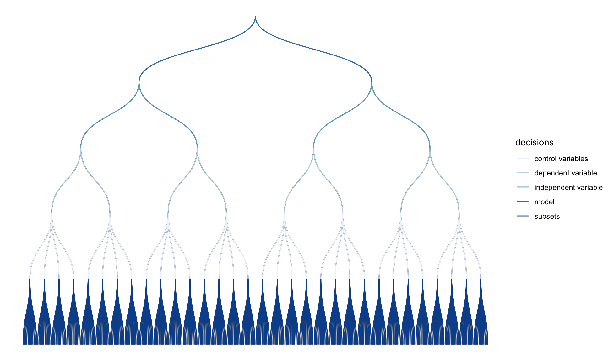
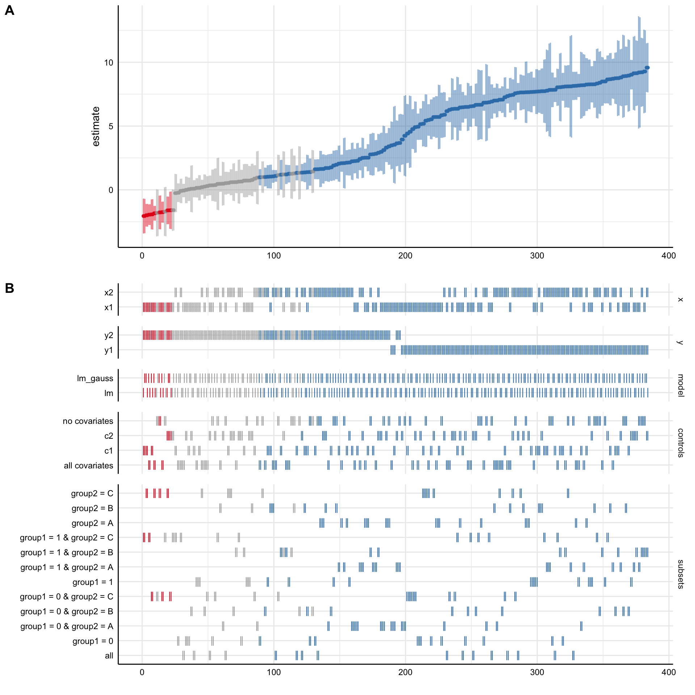
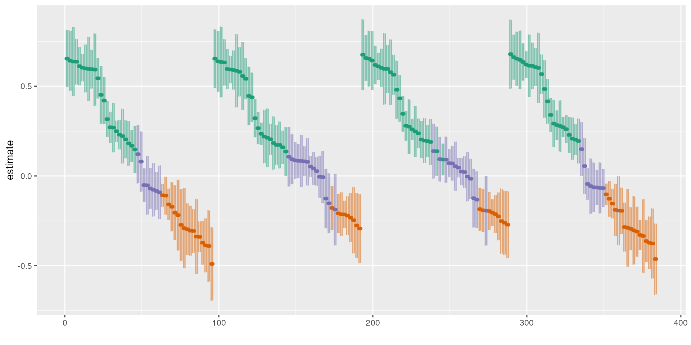
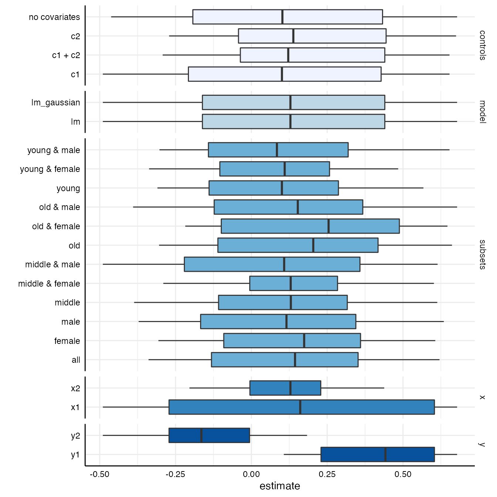

The following vignette is a more comprehensive version of the example on the homepage and exemplifies how to use the major functions of this package. Although using specr strictly speaking does not require any other package, we recommend to also load the tidyverse as it provides valuable functions for data wrangling and adapting outputs from specr functions. Furthermore, the tidyverse includes ggplot2 which can be used to modify the layout of the plots.
In order to understand what type of analytical choices exists, you need to understand your data set. In a first step, you should hence investigate your data closely.
# We have a look at the simulated data set that is included in the package head(example_data) #> x1 x2 c1 c2 y1 y2 group1 group2 #> 1 1.533913 1.3697122 0.5424902 3.8924435 23.500543 10.4269278 0 A #> 2 1.680639 1.5163745 -1.2415868 3.3377268 17.017955 0.5733467 1 C #> 3 1.223941 -0.2381044 0.1405891 0.8911959 -3.678272 4.2303190 0 B #> 4 1.765276 0.9524049 4.0397943 1.8567454 21.668684 14.8865252 1 B #> 5 1.907134 0.6282816 3.1002518 5.5840574 32.713106 20.5251920 0 A #> 6 1.710695 1.1898467 0.4648824 4.0239483 20.422171 4.3471236 1 C # Summary of the data set summary(example_data) #> x1 x2 c1 c2 #> Min. :-1.185 Min. :-1.6037 Min. :-4.093 Min. :-3.780 #> 1st Qu.: 1.823 1st Qu.: 0.5248 1st Qu.: 1.242 1st Qu.: 1.282 #> Median : 2.479 Median : 1.2740 Median : 2.513 Median : 2.775 #> Mean : 2.455 Mean : 1.2999 Mean : 2.499 Mean : 2.690 #> 3rd Qu.: 3.192 3rd Qu.: 2.1049 3rd Qu.: 3.897 3rd Qu.: 4.064 #> Max. : 5.576 Max. : 4.5741 Max. : 7.994 Max. : 9.001 #> y1 y2 group1 group2 #> Min. :-22.93 Min. :-22.148 Min. :0.0 A:144 #> 1st Qu.: 12.50 1st Qu.: 3.944 1st Qu.:0.0 B:162 #> Median : 21.69 Median : 11.753 Median :0.5 C:194 #> Mean : 23.89 Mean : 11.200 Mean :0.5 #> 3rd Qu.: 34.04 3rd Qu.: 17.966 3rd Qu.:1.0 #> Max. : 94.13 Max. : 46.341 Max. :1.0
There are several numeric variables. In this example, we assume that x represents independent variables, y represents dependent variables, c represents control variables, and group denotes potential grouping variables that can be used for subsetting the data.
The next steps involves identifying possible analytical choices. This step involves an in-depth understanding of the research question and the model(s) that will be specified. In this case, we assume simply that x should be positively correlated with y. We can use the additional function setup_specs() to check how different analytical decisions create varying factorial designs.
setup_specs(y = c("y1"), # We choose only one dependent variale x = c("x1", "x2"), # We are not sure which independent variable is better model = c("lm"), # We only estimate one type of model (linear model) controls = c("c1", "c2")) # We include two control variable #> # A tibble: 8 x 4 #> x y model controls #> <chr> <chr> <chr> <chr> #> 1 x1 y1 lm c1 + c2 #> 2 x2 y1 lm c1 + c2 #> 3 x1 y1 lm c1 #> 4 x2 y1 lm c1 #> 5 x1 y1 lm c2 #> 6 x2 y1 lm c2 #> 7 x1 y1 lm no covariates #> 8 x2 y1 lm no covariates
The resulting data frame creates eight different specifications. setup_specs() can be used to check and understand how different analytical choices create specific combinations. Yet, this step is not mandatory. This helper function is used within the next function run_specs() that actually runs the specification analysis.
The main function of the package is run_specs(). We need to include our analytical choices as arguments (as they will be passed to setup_specs().) Additionally, we need to provide the data and, if needed, we can also specify subsets that should be evaluated.
One type of analytical choice that could additionally affect the results refers to the type of model that is estimated. The function runs traditional linear regression models by default (i.e. when model = "lm" is provided as argument). However, customized model functions can be passed to the function, too. The only requirement is that the customized function has formula and data as argument names. The self-made function needs to be a model estimation function, that takes the formula and estimates the model based on the data. In run_specs(), the resulting object is passed to broom::tidy(), which can deal with a variety of model classes.
# specific model fitting function lm_gauss <- function(formula, data) { glm(formula = formula, data = data, family = gaussian(link = "identity")) } # Run specification curve analysis results <- run_specs(df = example_data, y = c("y1", "y2"), x = c("x1", "x2"), model = c("lm", "lm_gauss"), controls = c("c1", "c2"), subsets = list(group1 = unique(example_data$group1), group2 = unique(example_data$group2))) # Check results #> # A tibble: 384 x 25 #> x y model controls estimate std.error statistic p.value conf.low #> <chr> <chr> <chr> <chr> <dbl> <dbl> <dbl> <dbl> <dbl> #> 1 x1 y1 lm c1 + c2 4.95 0.525 9.43 3.11e-18 3.92 #> 2 x2 y1 lm c1 + c2 6.83 0.321 21.3 1.20e-57 6.20 #> 3 x1 y2 lm c1 + c2 -0.227 0.373 -0.607 5.44e- 1 -0.961 #> 4 x2 y2 lm c1 + c2 0.985 0.324 3.04 2.62e- 3 0.347 #> 5 x1 y1 lm_g… c1 + c2 4.95 0.525 9.43 3.11e-18 3.92 #> 6 x2 y1 lm_g… c1 + c2 6.83 0.321 21.3 1.20e-57 6.20 #> 7 x1 y2 lm_g… c1 + c2 -0.227 0.373 -0.607 5.44e- 1 -0.958 #> 8 x2 y2 lm_g… c1 + c2 0.985 0.324 3.04 2.62e- 3 0.350 #> 9 x1 y1 lm c1 5.53 0.794 6.97 2.95e-11 3.96 #> 10 x2 y1 lm c1 8.07 0.557 14.5 6.90e-35 6.98 #> # … with 374 more rows, and 16 more variables: conf.high <dbl>, #> # fit_r.squared <dbl>, fit_adj.r.squared <dbl>, fit_sigma <dbl>, #> # fit_statistic <dbl>, fit_p.value <dbl>, fit_df <dbl>, fit_logLik <dbl>, #> # fit_AIC <dbl>, fit_BIC <dbl>, fit_deviance <dbl>, fit_df.residual <int>, #> # fit_nobs <int>, fit_null.deviance <dbl>, fit_df.null <int>, subsets <chr>
The resulting data frame includes relevant statistics for each of the estimated models.
We can now plot a simple decision tree to understand how our analytical choices lead to a large number of specifications.
plot_decisiontree(results, legend = TRUE)

The package includes a simple function summarise_specs() that allows to get a first summary of the results.
# basic summary of the entire specification curve summarise_specs(results) #> # A tibble: 1 x 7 #> median mad min max q25 q75 obs #> <dbl> <dbl> <dbl> <dbl> <dbl> <dbl> <dbl> #> 1 3.59 4.56 -2.05 9.58 1.03 7.63 123 # summary by specific groups and statistics summarise_specs(results, # result data frame x, y, # grouping variables stats = lst(median, min, max)) # specific functions #> # A tibble: 4 x 6 #> # Groups: x [2] #> x y median min max obs #> <chr> <chr> <dbl> <dbl> <dbl> <dbl> #> 1 x1 y1 6.52 3.49 9.28 123 #> 2 x1 y2 0.498 -2.05 3.67 123 #> 3 x2 y1 7.80 5.89 9.58 123 #> 4 x2 y2 1.29 -0.258 2.91 123 # summary of another statistic summarise_specs(results, subsets, var = p.value) #> # A tibble: 12 x 8 #> subsets median mad min max q25 q75 obs #> <chr> <dbl> <dbl> <dbl> <dbl> <dbl> <dbl> <dbl> #> 1 all 1.84e-6 2.72e-6 5.08e-89 0.838 6.48e-40 6.31e-2 500 #> 2 group1 = 0 2.86e-5 4.24e-5 1.20e-57 0.994 2.33e-18 2.59e-1 250 #> 3 group1 = 0 & gr… 1.07e-3 1.59e-3 6.98e-16 0.577 2.35e- 5 4.95e-3 72 #> 4 group1 = 0 & gr… 7.86e-4 1.17e-3 2.53e-21 0.930 2.43e- 9 1.23e-1 76 #> 5 group1 = 0 & gr… 1.03e-3 1.53e-3 2.05e-22 0.572 2.37e- 8 6.66e-2 102 #> 6 group1 = 1 2.51e-5 3.71e-5 6.96e-46 0.749 3.52e-19 7.36e-2 250 #> 7 group1 = 1 & gr… 7.83e-5 1.16e-4 9.73e-17 0.0395 7.35e- 7 1.58e-3 72 #> 8 group1 = 1 & gr… 9.59e-5 1.42e-4 1.51e-15 0.277 1.32e- 9 7.74e-2 86 #> 9 group1 = 1 & gr… 7.58e-6 1.12e-5 3.86e-18 0.862 1.75e- 8 1.78e-1 92 #> 10 group2 = A 3.28e-8 4.86e-8 5.64e-30 0.0245 9.45e-11 9.52e-6 144 #> 11 group2 = B 2.87e-5 4.25e-5 2.05e-28 0.231 1.13e-15 8.32e-3 162 #> 12 group2 = C 3.03e-7 4.49e-7 2.45e-35 0.487 1.07e-15 3.48e-2 194
The output contains summary statistics such as the median, the median absolute deviation, … as well as the number of observations that were used for each model. Bear in mind that due to subsetting or missing data, sample sizes can vary considerably which, in turn, affects the results (e.g., the p-value).
However, in order to grasp how the different analytical choices affect the outcome of interest (in this case, the estimate refers to the unstandardized regression coefficient b), it is reasonable to plot a specification curve. The function plot_specs() to produces the typical visualization of the specification curve and how the analytical choices affected the obtained results.
# Plot specification curve analysis plot_specs(results)

The resulting plot includes the ranked specification curve (A) and an overview about how the different analytical choices affect the estimate of interest (B). Red represents negative and significant effects (based on the chosen significance level, by default \(\alpha = .05\)). Blue represents positive and significant effects. Grey refers to non-significant effects.
Sometimes, it can be useful to check the influence of specific choices on the estimate of interest more precisely. We can use the function plot_summary() to produce respective boxplots.
plot_summary(results)

We can see that the dependent variable (y) produces the largest differences in the obtained estimates.
Finally, we can estimate how much variance in the specification curve is related to which analytical decisions. Therefore, we have to estimate a basic multilevel model without predictors and the analytical decisions as random effects (interactions could be included too). We then use the function icc_specs() to calculate a respective table or plot_variance() to visualize the distribution.
# Estimate multilevel model library(lme4) model <- lmer(estimate ~ 1 + (1|x) + (1|y) + (1|controls) + (1|subsets), data = results) # Get intra-class correlation icc_specs(model) %>% mutate_if(is.numeric, round, 2) #> grp vcov icc percent #> 1 subsets 0.79 0.04 3.62 #> 2 controls 0.05 0.00 0.23 #> 3 y 19.72 0.90 89.82 #> 4 x 0.43 0.02 1.95 #> 5 Residual 0.96 0.04 4.38 # Plot decomposition plot_variance(model)
